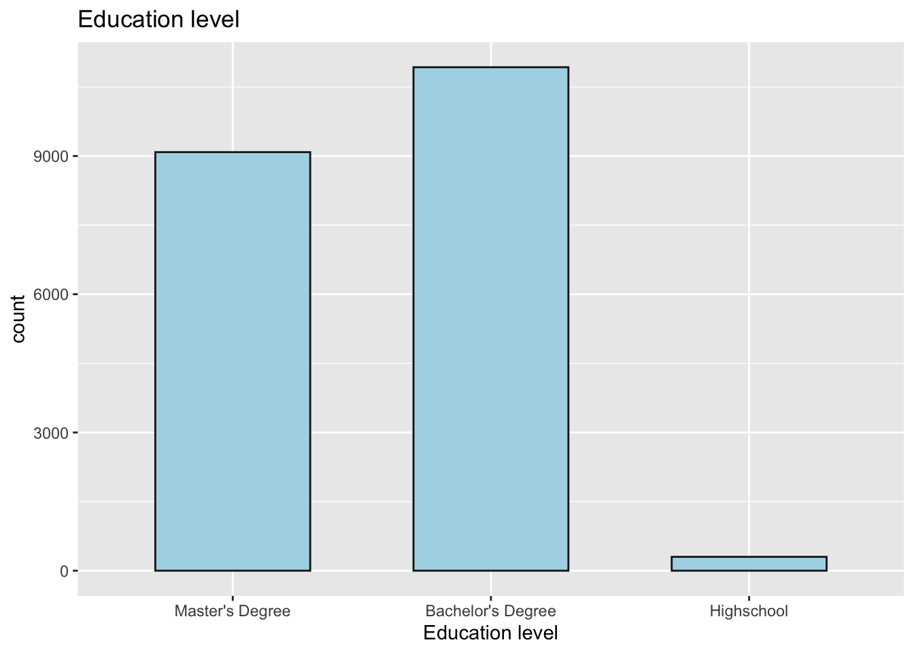
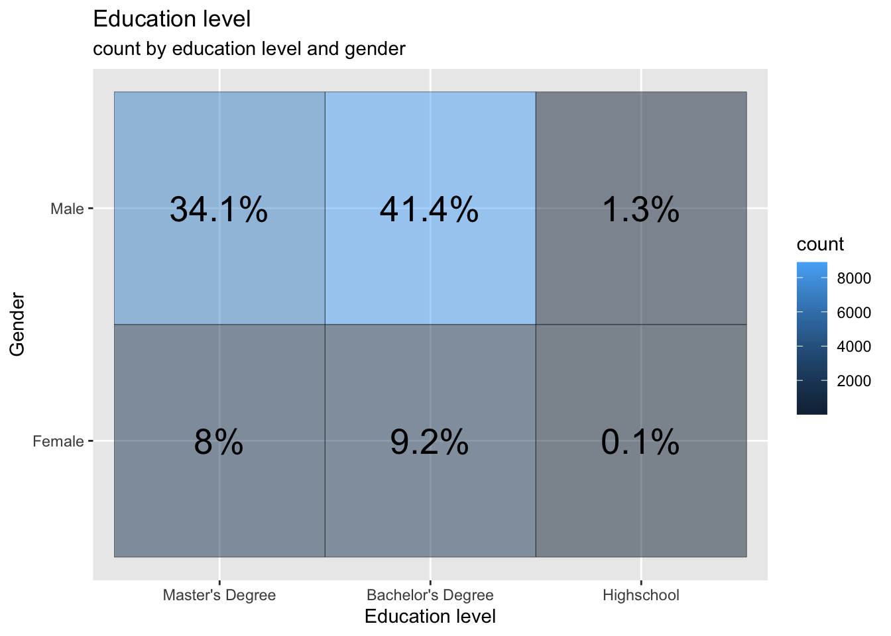
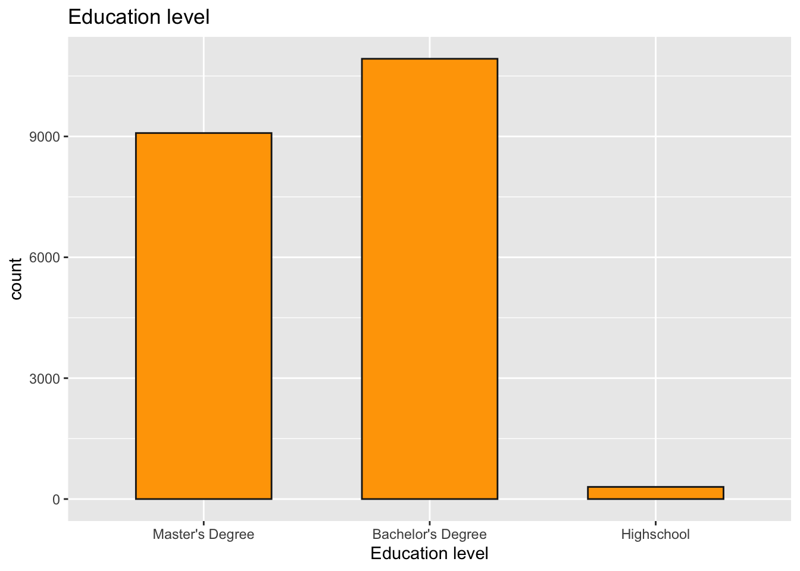

library(tidyverse)
library(readr)
library(ggplot2)
library(summarytools)
library(lubridate)
library(dplyr)
knitr::opts_chunk$set(echo = TRUE, warning=FALSE, message=FALSE)DACCS 601 Final Project
final_Project_assignment
final_project
Priyanka Perumalla
Data Science and STEM salary dataset
Tech Salary
Data Science and STEM Salaries Analysis
Introduction
The dataset I am analyzing, “The Data Science and STEM Salaries Dataset,” is sourced from levels.fyi. Levels.fyi is a platform that collects and provides information on job levels, salaries, and compensation packages in various companies and industries. The dataset represents salary and compensation information for individuals working in data science and STEM (Science, Technology, Engineering, and Mathematics) fields.
Each row in the dataset represents an individual case or observation, which corresponds to a specific person’s employment details and compensation information. The dataset includes columns such as timestamp (when the data was recorded), company (the company the individual works for), level (job level or position), title (job title), total yearly compensation, location (geographic location), years of experience, years at the company, various tags (related to skills or domains), base salary, stock grant value, bonus, gender, other details, city ID, designated market area (DMA) ID, row number, and information about the individual’s education and race.
Data Description
The dataset used in this analysis is sourced from levels.fyi, a platform that collects and provides information on job levels, salaries, and compensation packages. The data represents salary and compensation information specifically for data science and STEM (Science, Technology, Engineering, and Mathematics) roles. The data collection process on levels.fyi involves individuals voluntarily sharing their employment and compensation details. Users can submit their salary information, along with other relevant details, to contribute to the platform’s database. This crowd sourced approach allows for a diverse range of data to be collected, representing different companies, job levels, and locations. The dataset offers insights into the salaries and compensation packages received by data science and STEM professionals, enabling analysis and exploration of various factors that influence compensation in these fields.
Reading the dataset
data <- read.csv("PriyankaPerumalla_FinalProjectData/Levels_Fyi_Salary_Data.csv")
head(data)Presenting the descriptive information of the dataset. Like what all columns are present and what all information is present in every column. The nature of every column can be viewed through this sample data.
::: {.cell}
```{.r .cell-code}
head(data)
```
::: {.cell-output-display}
`````{=html}
<div data-pagedtable="false">
<script data-pagedtable-source type="application/json">
{"columns":[{"label":[""],"name":["_rn_"],"type":[""],"align":["left"]},{"label":["timestamp"],"name":[1],"type":["chr"],"align":["left"]},{"label":["company"],"name":[2],"type":["chr"],"align":["left"]},{"label":["level"],"name":[3],"type":["chr"],"align":["left"]},{"label":["title"],"name":[4],"type":["chr"],"align":["left"]},{"label":["totalyearlycompensation"],"name":[5],"type":["int"],"align":["right"]},{"label":["location"],"name":[6],"type":["chr"],"align":["left"]},{"label":["yearsofexperience"],"name":[7],"type":["dbl"],"align":["right"]},{"label":["yearsatcompany"],"name":[8],"type":["dbl"],"align":["right"]},{"label":["tag"],"name":[9],"type":["chr"],"align":["left"]},{"label":["basesalary"],"name":[10],"type":["dbl"],"align":["right"]},{"label":["stockgrantvalue"],"name":[11],"type":["dbl"],"align":["right"]},{"label":["bonus"],"name":[12],"type":["dbl"],"align":["right"]},{"label":["gender"],"name":[13],"type":["chr"],"align":["left"]},{"label":["otherdetails"],"name":[14],"type":["chr"],"align":["left"]},{"label":["cityid"],"name":[15],"type":["int"],"align":["right"]},{"label":["dmaid"],"name":[16],"type":["int"],"align":["right"]},{"label":["rowNumber"],"name":[17],"type":["int"],"align":["right"]},{"label":["Masters_Degree"],"name":[18],"type":["int"],"align":["right"]},{"label":["Bachelors_Degree"],"name":[19],"type":["int"],"align":["right"]},{"label":["Doctorate_Degree"],"name":[20],"type":["int"],"align":["right"]},{"label":["Highschool"],"name":[21],"type":["int"],"align":["right"]},{"label":["Some_College"],"name":[22],"type":["int"],"align":["right"]},{"label":["Race_Asian"],"name":[23],"type":["int"],"align":["right"]},{"label":["Race_White"],"name":[24],"type":["int"],"align":["right"]},{"label":["Race_Two_Or_More"],"name":[25],"type":["int"],"align":["right"]},{"label":["Race_Black"],"name":[26],"type":["int"],"align":["right"]},{"label":["Race_Hispanic"],"name":[27],"type":["int"],"align":["right"]},{"label":["Race"],"name":[28],"type":["chr"],"align":["left"]},{"label":["Education"],"name":[29],"type":["chr"],"align":["left"]}],"data":[{"1":"6/7/2017 11:33:27","2":"Oracle","3":"L3","4":"Product Manager","5":"127000","6":"Redwood City, CA","7":"1.5","8":"1.5","9":"NA","10":"107000","11":"20000","12":"10000","13":"NA","14":"NA","15":"7392","16":"807","17":"1","18":"0","19":"0","20":"0","21":"0","22":"0","23":"0","24":"0","25":"0","26":"0","27":"0","28":"NA","29":"NA","_rn_":"1"},{"1":"6/10/2017 17:11:29","2":"eBay","3":"SE 2","4":"Software Engineer","5":"100000","6":"San Francisco, CA","7":"5.0","8":"3.0","9":"NA","10":"0","11":"0","12":"0","13":"NA","14":"NA","15":"7419","16":"807","17":"2","18":"0","19":"0","20":"0","21":"0","22":"0","23":"0","24":"0","25":"0","26":"0","27":"0","28":"NA","29":"NA","_rn_":"2"},{"1":"6/11/2017 14:53:57","2":"Amazon","3":"L7","4":"Product Manager","5":"310000","6":"Seattle, WA","7":"8.0","8":"0.0","9":"NA","10":"155000","11":"0","12":"0","13":"NA","14":"NA","15":"11527","16":"819","17":"3","18":"0","19":"0","20":"0","21":"0","22":"0","23":"0","24":"0","25":"0","26":"0","27":"0","28":"NA","29":"NA","_rn_":"3"},{"1":"6/17/2017 0:23:14","2":"Apple","3":"M1","4":"Software Engineering Manager","5":"372000","6":"Sunnyvale, CA","7":"7.0","8":"5.0","9":"NA","10":"157000","11":"180000","12":"35000","13":"NA","14":"NA","15":"7472","16":"807","17":"7","18":"0","19":"0","20":"0","21":"0","22":"0","23":"0","24":"0","25":"0","26":"0","27":"0","28":"NA","29":"NA","_rn_":"4"},{"1":"6/20/2017 10:58:51","2":"Microsoft","3":"60","4":"Software Engineer","5":"157000","6":"Mountain View, CA","7":"5.0","8":"3.0","9":"NA","10":"0","11":"0","12":"0","13":"NA","14":"NA","15":"7322","16":"807","17":"9","18":"0","19":"0","20":"0","21":"0","22":"0","23":"0","24":"0","25":"0","26":"0","27":"0","28":"NA","29":"NA","_rn_":"5"},{"1":"6/21/2017 17:27:47","2":"Microsoft","3":"63","4":"Software Engineer","5":"208000","6":"Seattle, WA","7":"8.5","8":"8.5","9":"NA","10":"0","11":"0","12":"0","13":"NA","14":"NA","15":"11527","16":"819","17":"11","18":"0","19":"0","20":"0","21":"0","22":"0","23":"0","24":"0","25":"0","26":"0","27":"0","28":"NA","29":"NA","_rn_":"6"}],"options":{"columns":{"min":{},"max":[10]},"rows":{"min":[10],"max":[10]},"pages":{}}}
</script>
</div>
`````
:::
:::On,analysing the dimensions of the data set. We see that the dataset has 62642 rows to begin with and 29 distinct columns.
::: {.cell}
```{.r .cell-code}
dim(data)
```
::: {.cell-output .cell-output-stdout}
```
[1] 62642 29
```
:::
:::Checking to see if any columns are repeating. We can notice that all the 29 columns ar eunique
::: {.cell}
```{.r .cell-code}
length(unique(data))
```
::: {.cell-output .cell-output-stdout}
```
[1] 29
```
:::
:::Taking a look on what all columns are present in the dataset.
::: {.cell}
```{.r .cell-code}
colnames(data)
```
::: {.cell-output .cell-output-stdout}
```
[1] "timestamp" "company"
[3] "level" "title"
[5] "totalyearlycompensation" "location"
[7] "yearsofexperience" "yearsatcompany"
[9] "tag" "basesalary"
[11] "stockgrantvalue" "bonus"
[13] "gender" "otherdetails"
[15] "cityid" "dmaid"
[17] "rowNumber" "Masters_Degree"
[19] "Bachelors_Degree" "Doctorate_Degree"
[21] "Highschool" "Some_College"
[23] "Race_Asian" "Race_White"
[25] "Race_Two_Or_More" "Race_Black"
[27] "Race_Hispanic" "Race"
[29] "Education"
```
:::
:::Understanding the data:
The data set contains information from the “Data Science and STEM Salaries” data collected by levels.fyi. It consists of 62642 rows, representing as many as 62642 participants who volunteered to enter information in Levels.fyi. The data set contains 29 columns that capture various attributes of the participants and their responses.
- timestamp - The timestamp indicates when the survey response was recorded.
- company - This column represents the name of the company where the particpant is employed.
- level - It denotes the career level or seniority of the participant.
- title - This column specifies the job title or position held by the participant.
- totalyearlycompensation - It represents the total annual compensation of the participant, including salary, stock grants, and bonuses.
- location - This column indicates the geographical location of the participant.
- yearsofexperience - It indicates the number of years of professional experience the participant has.
- yearsatcompany - This column specifies the number of years the participant has been with their current company.
- tag - The tag column may provide additional information or categorization related to the participant or their response.
- basesalary - It represents the base salary component of the participant’s total yearly compensation.
- stockgrantvalue - This column captures the value of stock grants included in the participant’s total yearly compensation.
- bonus - It denotes the bonus amount included in the participant’s total yearly compensation.
- gender - This column represents the gender of the participant.
- otherdetails - The otherdetails column may contain additional information or details provided by the participant.
- cityid - It indicates the city identifier associated with the participant’s location.
- dmaid - The dmaid column represents the Designated Market Area (DMA) identifier, which relates to the participant’s location.
- rowNumber - This column assigns a unique row number to each participant in the dataset.
- Masters_Degree - This column captures whether the participant holds a Master’s degree.
- Bachelors_Degree - It indicates whether the participant holds a Bachelor’s degree.
- Doctorate_Degree - This column specifies whether the participant holds a Doctorate degree.
- Highschool - It denotes whether the participant has completed high school education.
- Some_College - This column represents whether the participant has attended college without completing a degree.
- Race_Asian - It indicates whether the participant identifies as Asian.
- Race_White - This column represents whether the participant identifies as White.
- Race_Two_Or_More - It denotes whether the participant identifies as belonging to two or more races.
- Race_Black - This column indicates whether the participant identifies as Black.
- Race_Hispanic - It represents whether the participant identifies as Hispanic.
- Race - This column captures the participant’s race or ethnic background.
- Education - It denotes the highest level of formal education completed by the participant.
Data tidying and mutation
To start off with any analysis the data needs to be tidy.
Loading the required libraries
library(tidyverse)
library(scales)
annotate <- ggplot2::annotateI am trying to check if this data has any null values. As a next step, I have omitted the null values as they would not contribute positively to my analysis. After omitting the rows which have atleast one null value, I am left with 21575 rows and 29 columns.
sum(is.na(data))[1] 115356data<- na.omit(data)
dim(data)[1] 21575 29It can be noticed that the summary column for race and education level already exists. But the flag columns for every category of education and race also exist. This is a redundancy and such columns can be deleted. I am getting rid of the columns Race_Asian,Race_White, Race_Black,Race_Hispanic,Some_College,Highschool,Doctorate_Degree,Bachelors_Degree,Masters_Degree,otherdetails. My dataset now has 19 columns.
data<- subset(data, select = -c(Race_Asian,Race_White, Race_Black,Race_Hispanic,Some_College,Highschool,Doctorate_Degree,Bachelors_Degree,Masters_Degree,otherdetails) )
dim(data)[1] 21575 19The location column in the dataset has the format ‘city,state,country’. But I would like to mutate this column to extract city,state and country columns separtely. After this mutation, I have 21 columns.
data<-separate(data = data, col = location, into = c("City", "State","Country"), sep = ",")
dim(data)[1] 21575 21The datetimestamp column in the dataset has the format ‘MM/DD/YYYY hh:mm:ss’. But I would like to mutate this column to extract Date and time separtely. After this mutation, I have 22 columns.
data<-separate(data = data, col = timestamp, into = c("Date ", "Time"), sep = " ")
dim(data)[1] 21575 22head(data)The date column in the dataset has the format ‘MM/DD/YYYY’. But I would like to mutate this column further to extract month,day and year separtely. After this mutation, I have 24 columns.
data<-separate(data = data, col = 1, into = c("Month", "Day","Year"), sep = "/")
dim(data)[1] 21575 24head(data)I want to group salaries together into buckets for further analysis. I have kept the bucket size as $25,000 USD. I am trying get the count of people who fall into each of such compensation buckets.
data <- data %>%
mutate(Salary_bucket = case_when(totalyearlycompensation >=0 & totalyearlycompensation <25000 ~ "0-25k",
totalyearlycompensation >=25000 & totalyearlycompensation <50000 ~ "25k-50k",
totalyearlycompensation >=50000 & totalyearlycompensation <75000 ~ "50k-750k",
totalyearlycompensation >=75000 & totalyearlycompensation <100000 ~ "75k-100k",
totalyearlycompensation >=100000 & totalyearlycompensation <125000 ~ "100k-125k",
totalyearlycompensation >=125000 & totalyearlycompensation <150000 ~ "125k-150k",
totalyearlycompensation >=150000 & totalyearlycompensation <175000 ~ "150k-175k",
totalyearlycompensation >=175000 & totalyearlycompensation <200000 ~ "175k-200k",
totalyearlycompensation >=200000 & totalyearlycompensation <225000 ~ "200k-225k",
totalyearlycompensation >=225000 & totalyearlycompensation <250000 ~ "225k-250k",
totalyearlycompensation >=250000 & totalyearlycompensation <275000 ~ "250k-275k",
totalyearlycompensation >=275000 & totalyearlycompensation <300000 ~ "275k-300k",
totalyearlycompensation >=300000 & totalyearlycompensation <325000 ~ "300k-325k",
totalyearlycompensation >=325000 & totalyearlycompensation <350000 ~ "325k-350k",
totalyearlycompensation >=350000 & totalyearlycompensation <375000 ~ "350k-375k",
totalyearlycompensation >=375000 & totalyearlycompensation <400000 ~ "375k-400k",
totalyearlycompensation >=400000 & totalyearlycompensation <425000 ~ "400k-425k",
totalyearlycompensation >=425000 & totalyearlycompensation <450000 ~ "425k-450k",
totalyearlycompensation >=450000 & totalyearlycompensation <475000 ~ "450k-475k",
totalyearlycompensation >=475000 & totalyearlycompensation <500000 ~ "475k-500k",
totalyearlycompensation >=500000 ~ "500k+"))#conduct summary statistics of the dataset(s)
Now that the data is clean, tidy and all set for analysis, I would like to now view the summary statistics of the cleaned dataset.
summarise_all(data, mean)summarise_all(data, min)summarise_all(data, max)summarise_all(data, median)summary(data) Month Day Year Time
Length:21575 Length:21575 Length:21575 Length:21575
Class :character Class :character Class :character Class :character
Mode :character Mode :character Mode :character Mode :character
company level title
Length:21575 Length:21575 Length:21575
Class :character Class :character Class :character
Mode :character Mode :character Mode :character
totalyearlycompensation City State
Min. : 10000 Length:21575 Length:21575
1st Qu.: 119000 Class :character Class :character
Median : 174000 Mode :character Mode :character
Mean : 197855
3rd Qu.: 245000
Max. :4980000
Country yearsofexperience yearsatcompany tag
Length:21575 Min. : 0.000 Min. : 0.000 Length:21575
Class :character 1st Qu.: 3.000 1st Qu.: 0.000 Class :character
Mode :character Median : 6.000 Median : 2.000 Mode :character
Mean : 7.123 Mean : 2.704
3rd Qu.:10.000 3rd Qu.: 4.000
Max. :45.000 Max. :40.000
basesalary stockgrantvalue bonus gender
Min. : 4000 Min. : 0 Min. : 0 Length:21575
1st Qu.:100000 1st Qu.: 0 1st Qu.: 3000 Class :character
Median :135000 Median : 20000 Median : 13000 Mode :character
Mean :133865 Mean : 44894 Mean : 18418
3rd Qu.:165000 3rd Qu.: 55000 3rd Qu.: 25000
Max. :900000 Max. :954000 Max. :900000
cityid dmaid rowNumber Race_Two_Or_More
Min. : 10 Min. : 0.0 Min. :21208 Min. :0.00000
1st Qu.: 7322 1st Qu.:501.0 1st Qu.:47069 1st Qu.:0.00000
Median : 8198 Median :751.0 Median :59844 Median :0.00000
Mean :10176 Mean :561.2 Mean :59203 Mean :0.03541
3rd Qu.:11521 3rd Qu.:807.0 3rd Qu.:71590 3rd Qu.:0.00000
Max. :47926 Max. :881.0 Max. :83875 Max. :1.00000
Race Education Salary_bucket
Length:21575 Length:21575 Length:21575
Class :character Class :character Class :character
Mode :character Mode :character Mode :character
I notice that the minimum total compensation is 10,000 USD and the maximum total compensation is 4,980,000 USD. The average compensation is 197,855 USD which is approximately 198,000 USD. The mean average years of experience is ar 7.12 years.
Potential research questions
The dataset provides several variables that can be used to answer various questions related to data science and STEM salaries. Here are some potential questions I tried to explore:
How is the education level effecting the people who are seeking jobs in Data Science and STEM Domains.
How does the gender pay gap manifest in the data? Are there noticeable differences in compensation between genders?
Are there any trends or patterns in compensation based on educational attainment (Masters, Bachelors, Doctorate, etc.)?
How does compensation vary across different years?
Is there a correlation between years of experience at the company and total yearly compensation?
Are there any regional differences in salaries for data science and STEM roles?
Is level and years of experience proportional always?
Number of states involved in the data set and is the data set skewed towards a specific state of the US given the number of companies in thar region?
Which education level is currently the most popular?
Can we explain education level based on gender(man and women) and age?
Is a highest level of education required to earn an above average salary even with less than average years of experience for the role?
Education level vs number of people
We will now examine the education metric. We use scatter charts and tile charts, respectively, to display the proportion of the indicated levels of both variables and the number of respondents to two indicators with the levels of the variables under consideration.
From the below plot, we see that about 9000 of respondants have a Master’s degree, 11,000 have a Bachelor’s degree and only a few hundrends have just a high school diploma. It looks like atleast a Bachelor’s degree is mandatory to get a job in the STEM and Data Science Domain. While a master’s degree does not look mandatory, only analysing the compensation difference would tell us if a master’s degree is worth it or not in terms of increased salary compensation.
education <- as.data.frame(table(data$Education))
ggplot(education, aes(reorder(Var1, +Freq), Freq))+
geom_bar(col = "gray10", stat = "identity", width = 0.6, fill = "lightblue")+
scale_x_discrete(limits = c("Master's Degree", "Bachelor's Degree", "Highschool"))+
labs(title = "Education level", y = "count", x = "Education level")
Education level vs Salary vs Gender
We observe a gender- and education-based breakdown of the population who entered their salaries. The “I prefer to define myself” options in the variable are limited to the two most popular levels, female and male, due to the small number of refusals and indications. There are four times fewer women than men among the respondents. The proportions of people with and without a college degree are very similar for both sexes, but it is clear that those without a college degree are more likely to be men than the rest of the sample. It is interesting to see that the gender with most “Masters” degree and “College/High school” is men.
tile2 <- data %>%
filter(gender %in% c("Female", "Male")) %>%
group_by(gender, Education) %>%
summarise(count = n(), .groups = 'drop')
ggplot(tile2, aes(Education, gender))+
geom_tile(aes(fill = count), colour = "gray10", alpha = 0.5)+
scale_x_discrete(limits = c("Master's Degree", "Bachelor's Degree", "Highschool"))+
geom_text(aes(label = paste0(round(count/sum(tile2$count) * 100,1), "%")), size = 7)+
labs(title = "Education level", subtitle = "count by education level and gender", y = "Gender", x = "Education level")
Salary vs Education level
The usual expectation is that salary should increase with education level. But in the tech industry, I feel that its only your talent and abilities that matter but not the education level. I have run the analysis to see it that is true. I can clearly see that the pattern is very similar for Bachelor’s Degree and Master’s Degree when I look at higher bands of salaries (200k USD +). So for jobs that pay above 200k USD, looks like degree does not matter. But when I look at the 100k USD to 200k USD salary band, the Bachelor’s degree population seems to win. But that might be because of the skewed distribution towards them. I can also notice some highschool diploma holders that fell in the band of 300k+. I can’t stop myself from mapping them to be a CEO of a company but a college dropout.
data %>%
filter(Salary_bucket!="") %>%
ggplot(., aes(Education, Salary_bucket, col = Education))+
geom_count()+
scale_x_discrete(limits = c("Master's Degree", "Bachelor's Degree", "Highschool"))+
scale_y_discrete(limits = c("0-25k","25k-50k","50k-75k","75k-100k","100k-125k","125k-150k","150k-175k","175k-200k","200-225k","225k-250k","250k-275k","275k-300k","300-325k","325k-350k","350k-375k","375k-400k","400-425k","425k-450k","450k-475k","475k-500k","500k+"))+
labs(title = "Education level", subtitle = "Count by education level and salary range", y = "Salary", x = "Education level")
Average Total Compensation for different years :
If we want to see how average total compensation for different years looks like, we could use a scatter plot to deduce a relationship between average total compensation and year. From below plot, we could see that, the average total compensation decreased from 2020 to 2021. There could be multiple unwarranted reasons for this trend which could be deduced from the given plot.But I strongly feel that the economic downtime has something to do with the reduced compensations at Tech firms.
data = data%>% na.omit() %>%
group_by(Year) %>% summarise(Mean_salary = mean(totalyearlycompensation))
p <- ggplot(
data,
aes(y = as.numeric(Mean_salary), x = as.factor(Year), color = factor(Year), group = 1)) +
geom_point(size=1.5) +
scale_color_viridis_d() +
scale_linetype_manual() +
labs(x = "Year", y = "Average Total Compensation") +
theme(legend.position = "top")
p + geom_line(color='blue')
CONCLUSION
With all the analysis above, we can answer the following questions-
The respondents are from different education backgrounds but the distribution is skewed towards peple who are atleast graduates. They make 99% of the participants, given its higher population (shown in excel sheet).
There is a huge gender gap that can be noticed. While it can be concluded that there is only one female for every 4 males in the data that has job in our interested domain. It can also be noticed that men tend to pursue higher education more tham female.
We see that there is a clear correlation between Education level (completed degree) vs job compensation. In every salary band such a trend is varying. Salary bands above 250k USD value individual accomplishments over educational degree.
The average total compensation changes with every year. In fact it reduced from the year 2020 to 2021.
Reflection
Since it is my first project in R, I learned that working with a data set involves taking raw data, cleaning it, then visualizing and interpreting different relationships. I focused on the variables that I was most intrigued by. Eg: I was curious about how gender/degrees influence jobs and compensation. What paths or roles do Data Science enthusiasts from different education backgrounds prefer? Which states are currently paying high? For somebody would I advise to pursue a masters degree in order to get a high salary? I’ve enjoyed learning the process for exploratory data analysis and visualization.